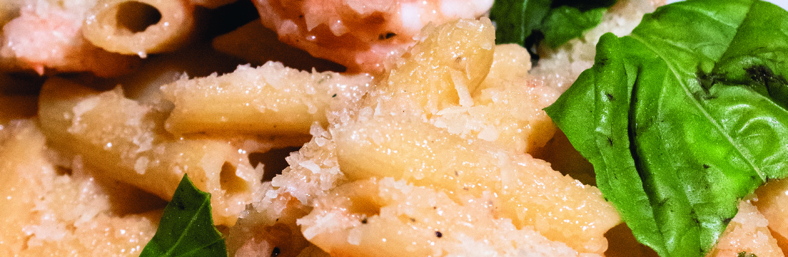
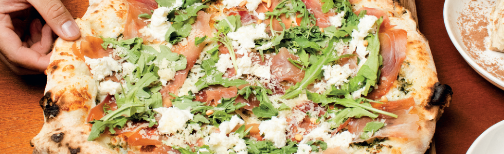

PARA DISFRUTAR A TU RITMO
Hoy se come
con gusto.
De las entradas al último bocado de postre. Explora nuestras pastas, pizzas y calzones y encuentra lo que se te antoja hoy.
PIZZA A LA LEÑA · NARVARTE
Una pizza para compartir.
Una pasta para disfrutar sin prisa.
Encuentra tu próximo antojo.
GUSTI AL PIATTO · CIUDAD DE MÉXICO


PARA DISFRUTAR A TU RITMO
De las entradas al último bocado de postre. Explora nuestras pastas, pizzas y calzones y encuentra lo que se te antoja hoy.
NOS VEMOS EN LA NARVARTE
Av. Eugenia 1308, Local A
Narvarte Poniente, Ciudad de México